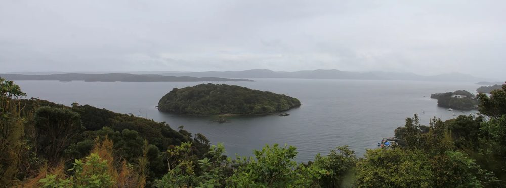
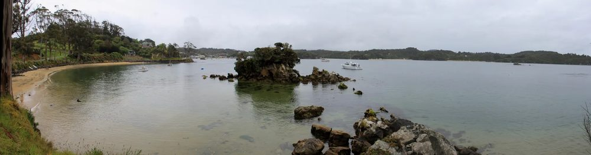
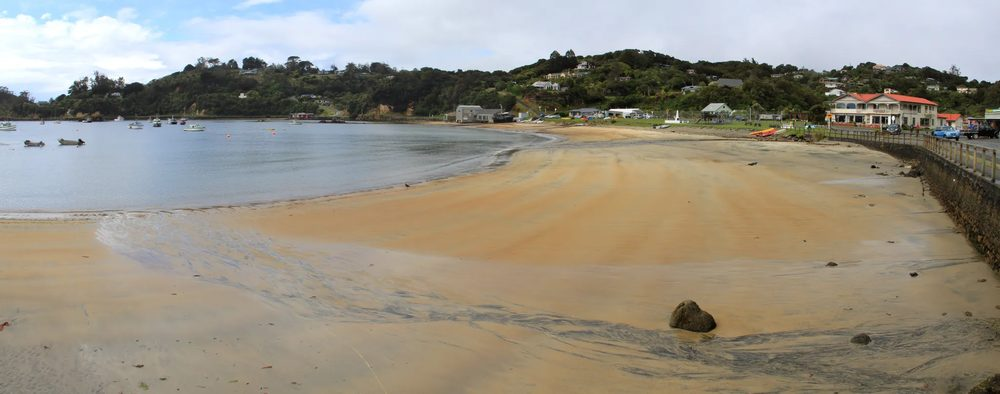
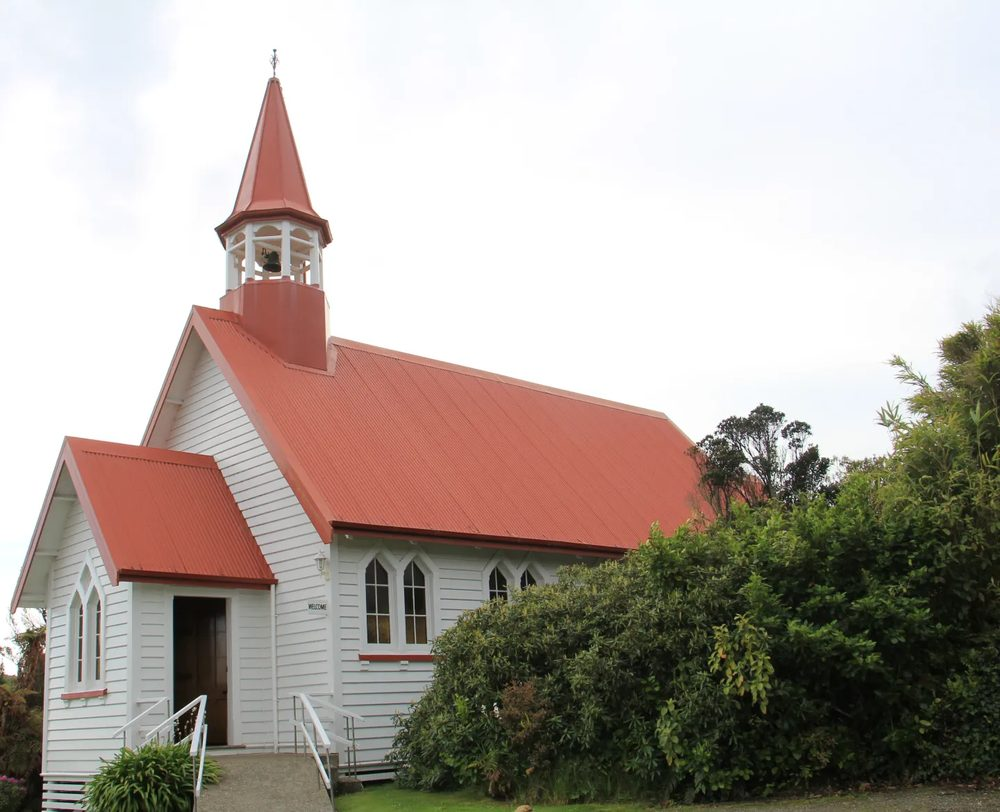
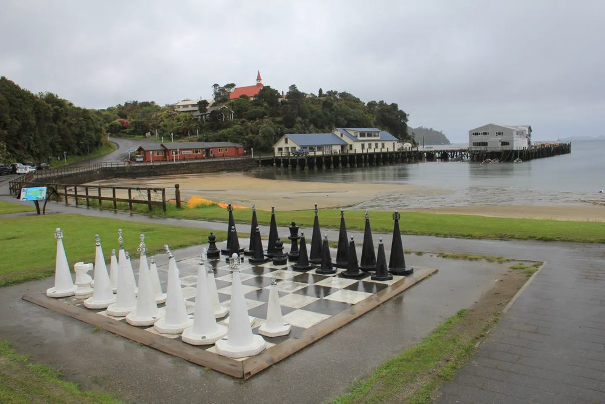

The Stewart Island story
16 November 2019
New Zealanders we’ve met on our travels have been impressed that Stewart Island is on our itinerary. Although tourism is a major part of its economy that’s not saying much for an island with fewer than 400 permanent residents. Few New Zealanders appear to have made the trip, although many speak wistfully of popping over “one day”. It’s a classic bucket list destination.

Ulva Island viewed from Observation Point
So what’s the attraction of Rakiura Stewart Island, the third, smallest and most southerly of New Zealand’s main islands? Visitors who cross the 30 kilometres of the Foveaux Strait mostly make the journey to go tramping (hiking). There’s a lot for them to have a go at.
At 1,680 square kilometres Rakiura Stewart Island is about the size of Greater London. Most of it is a rugged land of undulating hills and low peaks cloaked in pristine, primeval forest and bush growing down to the sea’s edge. Offshore is a scattering of small, picturesque islands and rocky outcrops.
Today 85% of the island is protected as a National Park, and much of the rest is uninhabited and owned by the Rakiura Māori Land Trust. The Rakiura Stewart Island wilderness remains almost as it was before the first ancestors of Māori arrived in the 1200s.

Leask Bay
A small part of me wishes we could visit Rakiura National Park, that we could do what all the fit young things with their enormous rucksacks come here to do, which is to tramp off into the bush and have an adventure in the land that time forgot.
But that’s not going to happen, partly for health reasons but mainly because life’s too short. And anyway, there’s plenty to see and to admire in the small bit of the island that’s accessible to non-trampers like us.

Halfmoon Bay, Oban. The red-roofed building on the right is the hotel.
Most of Rakiura Stewart Island’s residents live in the township of Oban, on Halfmoon Bay. I guess the best word for it is quaint, just a scattering of buildings along a few roads, a tiny supermarket and a hotel that acts as the social centre for islanders and visitors alike. There’s even a giant outdoor chessboard, in case anyone gets bored.
Rakiura also boasts a library, a sports and community hall, and a museum. The latter will soon be replaced by a brand new, purpose-built multi-million dollar building, the result of years of fund-raising. Given its tiny population the island has a surprising wealth of facilities that would not look out of place in a town many times its size.
On the hill overlooking Halfmoon Bay stands Oban Presbyterian Church. Being Presbyterian the church, like the name ‘Oban’, is a clue to the Scottish heritage of many of the European settlers here. Wooden and built in 1904, it’s one of the few buildings of any note in the island.

Oban Presbyterian Church
There’s evidently a strong sense of community: they’re all in this together, Stewart Islanders, living the dream in New Zealand’s very own “lands end.” Inevitably in a place so small everyone knows everyone else, and nobody locks their doors except the tourists. It’s a friendly, peaceful island, an improbable yet welcome escape from the hurly-burly of the modern world.
In the early decades of European colonisation whaling and sealing were mainstays of the local economy, but thankfully those activities are now but a distant memory. Fishing once employed much of the population, but modern techniques require fewer workers, so it’s left to tourism to pick up the slack.
But most of the tourists are away in the bush, doing whatever it is that trampers do, so there’s little to spoil the tranquillity of Oban.

Giant chessboard on the seafront, and behind the dock from which the ferry to the mainland departs
For us Rakiura Stewart Island’s most attractive feature is its birdlife. Many native New Zealand birds thrive here due to the absence of stoats and other mammalian predators. Outlandish though it may seem, to help ensure the island remains a safe haven for birds, dogs must attend ‘kiwi aversion’ classes, where they are trained not to pursue these flightless Aotearoa icons.
But the battle against predators hasn’t been won. Rats remain a significant problem, and while they don’t appear to threaten the adult kiwi, they prevent other native birds spreading from offshore sanctuary islands and gaining a foothold on the Rakiura mainland.
Platypus Man. (2019, December 6). The Stewart Island story [Blog post]. The Platypus Man in New Zealand. https://newzealandplatypus.wordpress.com/2019/12/06/the-stewart-island-story/